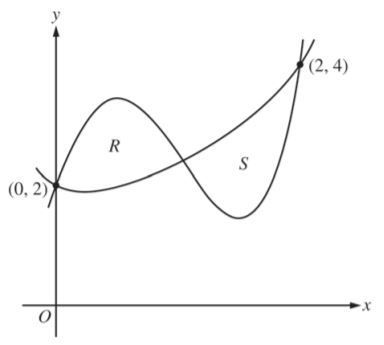
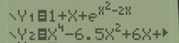

| 2 |
| -2 |
Topic: Area between 2 Curves.
 From middle school math we can see that the area of this rectangle is 8 (b*h).
From Calculus we know that we can find the area using the definite integral:
From middle school math we can see that the area of this rectangle is 8 (b*h).
From Calculus we know that we can find the area using the definite integral:
= 8 as well.
 What may not be as obvious is what happens when we translate the rectangle:
Obviously the area is still 8, but is 12.
So what are we missing? It turns out that ALL integrals are actually of the form:
What may not be as obvious is what happens when we translate the rectangle:
Obviously the area is still 8, but is 12.
So what are we missing? It turns out that ALL integrals are actually of the form:
However, because g(x) has been the x axis everytime up until now, we have just ignored it.
So looking at this graph we have
.
General Process:

- Find your bounds. Set
f(x)=g(x) and find all point(s) of intersection.
In the example on the right we can see that the bounds are [-2,2].
If you did not have a graph you would solvef(x)=g(x) algebraically. - Determine which equation is bigger (on top)
(If you have multiple intervals the equations may swap)
In the example at right g(x) is bigger so our integral is - Integrating we get (
x3+3x ) − (x3−2x )
Combining like termsx3+5
Evaluating over the domain [-2,2]: u2.
Assignment:
Problem 1:
|  |
2015 AP© Calculus AB. Problem # 2.Let f and g be the functions defined by Let R and S be the two regions enclosed by the graphs of f and g shown in the figure at left. |
(You may use a calculator. )
|
Step 1 (hint): |
Let (

  |
|
|
Step 2 (hint): |
The integral is g(x) - f(x) because g(x) > f(x) on [0,a]. |
|
|
Step 3 (hint): |
The integral is f(x) - g(x) because f(x) > g(x) on [a,2]. |
|
| Answer: |
|
|
| Score: |